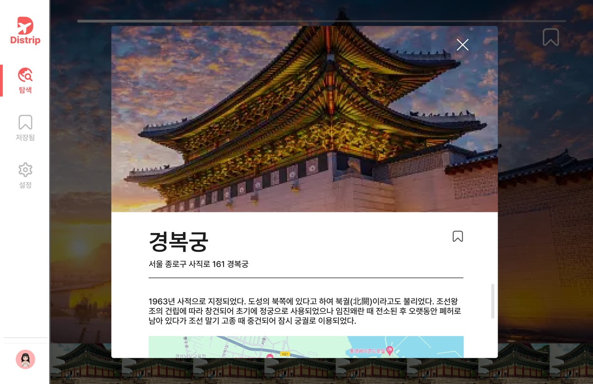

Project portfolio · 2024
Discover your Trip
어디로 갈지 고민하는 사용자가 여행지 사진을 탐색하고, 마음에 드는 곳을 저장하는 웹 서비스입니다.
2024.01–2024.04 · Spring Boot 3 · Java 21 · MySQL

01 · Problem & product
여행지를 정하기 전부터 많은 설명과 검색 조건을 입력해야 하면 탐색을 시작하기 어렵습니다. 사진을 먼저 보고 관심이 생긴 곳의 상세 정보를 여는 흐름을 만들었습니다.
홈에서 여행지 사진을 무작위로 보여주고, 사진을 누르면 장소 설명을 열 수 있습니다. 가고 싶은 장소는 북마크해 다시 살펴볼 수 있습니다.
사진으로 여행지 후보 발견
장소 정보와 위치 확인
관심 여행지 북마크
저장한 여행지 목록 조회
02 · My work
한국관광공사의 관광지 약 1,000건을 수집·전처리해 CSV로 정리하고 AWS RDS에서 관리했습니다. 랜덤 여행지 제공과 관심 여행지 저장 API를 구현했습니다.
프론트엔드 1명, 백엔드 1명, 디자이너 1명으로 진행했습니다. 백엔드 개발과 데이터 관리를 전담했습니다.
03 · Technical decision
제한된 여행지 데이터에서 단순 무작위 추출을 반복하면 사용자가 사이트에 다시 들어왔을 때 같은 사진을 자주 볼 수 있었습니다.
사진 순서를 미리 무작위로 정하고 마지막으로 본 위치를 기준으로 다음 여행지를 제공했습니다. 로그인 사용자는 조회 위치를 이어서 사용하고, 비로그인 사용자는 정렬된 사진을 순서대로 탐색하게 했습니다.
남은 사진 수가 적을 때의 탐색 범위와 재접속 시 이전 탐색 상태를 어떻게 이어갈지를 함께 확인했습니다.
04 · Reflection
새로운 경험은 데이터 양뿐 아니라 보여주는 순서와 사용자 상태 관리에도 달려 있습니다. 사진 중복을 줄이는 방식으로 탐색의 흐름을 개선했습니다.
데이터가 늘어나면 저장한 장소와 탐색 이력을 활용한 개인화 추천을 검토할 수 있습니다. 공유 기능도 유입을 늘리기 위한 아이디어로 남겼습니다.
개인화 추천과 공유 기능은 원본 자료의 개선 아이디어이며 현재 구현 기능으로 표현하지 않았습니다.